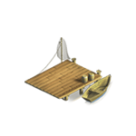

Получено: файл; исходный URL. Иллюстрация пристани в статье ZombieLend об Острове Любви; исходная страница ссылается на zombicity.info, скачан файл по тому же пути с moy.su. Побайтовая идентичность не проверена; похожая пиктограмма может использоваться для других пристаней. Страница: источник.

Пристань на Остров Любви
браузерная версия; платформа и дата редакции не установлены- Тип
- Постройка
- Версия и дата
- браузерная версия; платформа и дата редакции не установлены
Данные по источнику · браузерная версия; платформа не определена · дата редакции не установлена
Предварительно: Автоматическое чтение цифровых пиктограмм и их подписей; знак ? означает нераспознанное количество, подписи могут содержать ошибки источника. Требуется ручная сверка каждой стадии.. Требуется сверка.
- Исходные подписи и цифры в первой колонке
- [Пристань на Остров Любви] | [Опыт за каждый этап строительства] | 300 | 500 | [Суммарный опыт] | 800
- Стадии по пиктограммам
- Стадия 1: 20 × Доска + 20 × Гвозди + 50 × Любовь Стадия 2: 1 × Капитан + 20 × Желтая краска + 20 × Пружина
Данные по источнику · Мой Мир (Mail.ru), историческая таблица · дата редакции не установлена
Предварительно: Таблица источника; обозначения валют/уровней могут быть пиктограммами и в тексте отсутствовать. Сопоставление названий пристаней и флага Беларуси выполнено по названию и требует сверки.. Требуется сверка.
- Название и первая колонка источника
- Пристань "На остров любви"
- Опыт, стадии, производство и модернизация
- Опыт: 800 = 300+500 Стадии строительства: 20 Доска + 20 Гвозди + 50 Любовь 20 Желтая краска + 20 Пружина + 1 Капитан Создает: С этой пристани можно отправиться в плавание к другим островам.
Связанные сущности
нет проверенных связей — требуется сверка.